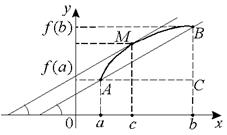

Геометрический смысл теоремы Лагранжа

– угловой коэффициент секущей
 .
.
. – угловой коэффициент
касательной к кривой  в точке . На кривой найдется,
по крайней мере, одна точка
в точке . На кривой найдется,
по крайней мере, одна точка  , в которой
касательная параллельна хорде .
, в которой
касательная параллельна хорде .
в точке . На кривой найдется,
по крайней мере, одна точка , в которой
касательная параллельна хорде .Доказанная формула называется формулой Лагранжа
или формулой конечных приращений. Так как
,
то
, ,
где
,
откуда
, .
1˚. Точек  может быть несколько.
может быть несколько.
может быть несколько.2˚.Если , то , получаем утверждение теоремы Ролля.
3˚.Теорему Лагранжа можно использовать для приближенных
вычислений:
,
где .
Положим , тогда
.
Погрешность тем меньше, чем ближе  к
к
 .
.
к
.;
,
. ;
, .